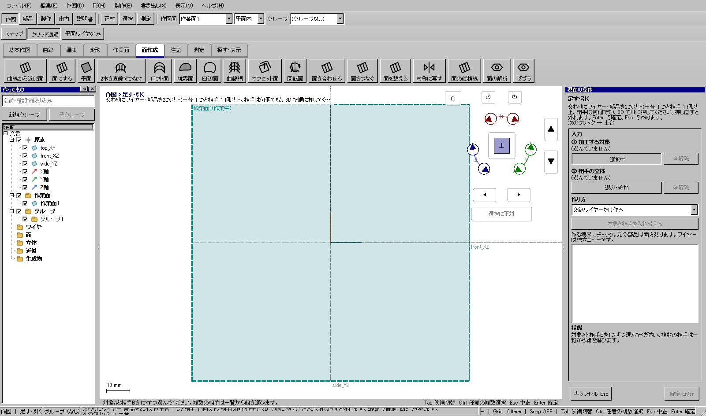
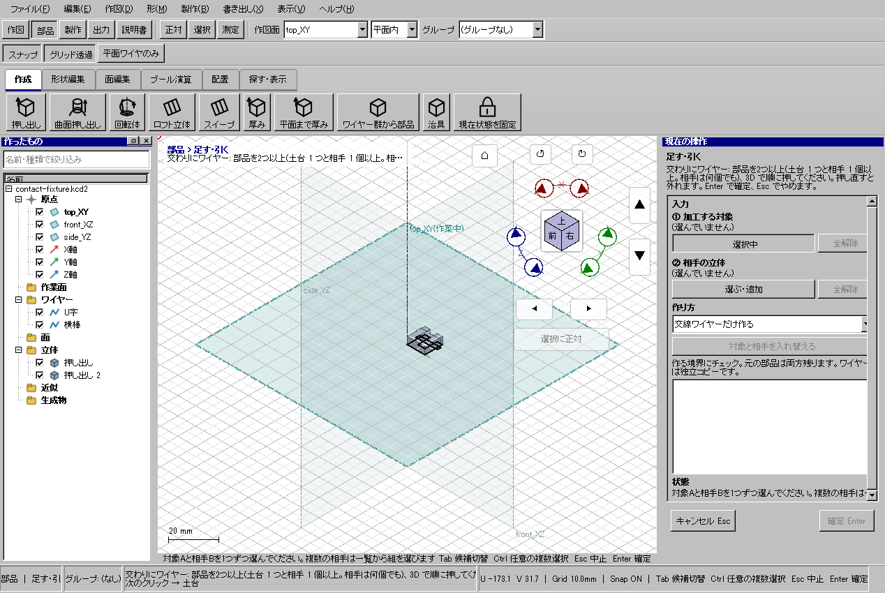

交差する部品の境界線を残す
交差する部品の境界線を残す
使う機能：交わりにワイヤー
交差・接触の位置を線として残します。元部品を削る操作ではないため、線だけを型紙や次の作図へ使いたい時に適します。
接触や交差の位置にワイヤーが残る。
1 準備 — 元の図形から作る
一部が重なる2つの箱を作る。
まだ用意できていなければ、次の手順を先に行ってください。既にモデルがある場合も、例の座標・大きさ・面の向きを自分のモデルへ読み替えます。
- 20×10×10mmの箱を作る — 図形の作成から順に練習できます。
- 線・面・部品を取り違えずに選ぶ — 図形の作成から順に練習できます。
練習前にKCD2を別名保存します。数値の長さはmm、角度は度です。平面内のu/vと世界XYZを区別します。
2 使う道具を開く — 押す場所
- 部品 → ブール演算 → 交わりにワイヤー
別の入口：Ctrl+K → 交わりにワイヤーを検索 → 候補の用途を確認して開きます。別モードなら「全モードから探す」をオンにします。

3 操作手順 — 一つずつ進める
実際に交わる入力を準備する
箱2個の例なら、10mm角をX方向に5mmずらして重ねます。窓なら工具や方向投影した輪郭が車体を貫くようにします。
画面で確認：透視図で重なるだけでなく、実際の3D位置で交差します。
作り方を確認する
部品のブール演算から道具を開き、右ペインの作り方が「交線ワイヤーだけ作る」であることを見ます。
画面で確認：同じ右ペインで方式を切り替えられるので、前回の条件を確認します。
土台を選ぶ
「①土台の立体」の選択ボタンを押し、残す側の部品を指定します。
画面で確認：対象名と3D強調が一致します。トリムは面・線の対象も条件に応じて使います。
相手を選ぶ
「②相手の立体」のボタンから工具を指定します。逆に入れた時は該当欄だけ解除します。
画面で確認：土台と相手を同じ欄に集めないようにします。
残す形を選ぶ
通常の足す・引く・交差は結果の下見を確認します。トリム・分割では一覧または3Dから残す区画を指定し、必要なら境界ワイヤーも作るを有効にします。
画面で確認：交わりの線。元の部品はこの線生成だけでは削られない。
確定と比較
状態欄に失敗がないことを確認しEnterで確定します。元と結果の表示を分け、穴や交差部を別方向から見ます。
画面で確認：違う結果ならCtrl+Zで戻し、土台・相手・残す区画を直します。
4 設定する欄と数値
ボタン名・欄名と、今回使う値を対応させてください。項目が出ていない場合は作り方・モードが合っているか確認し、ペイン内をスクロールします。
| 見る欄・役割 | この例の設定と意味 |
|---|---|
| 対象 | 交わる2部品 |
| 結果 | 境界ワイヤー |
選択の確認：役割欄の名前と3Dの強調を照合します。重なって拾いにくい時はTabで候補を替えます。全体を使う例では左一覧の要素名を選び、3Dの1辺選択と区別します。

この実画面は既存操作試験の一場面で、下の数値例の完成画像とは限りません。設定・選択の操作画面。具体的な完成例は段階写真のある作業例を参照してください。
5 確定して結果を確認
必要な入力と数値をそろえ、下見と状態欄を確認して、右ペインの作成・適用・確定ボタンを押します。Enter対応の道具はEnterでも確定できます。
接触や交差の位置にワイヤーが残る。
形を作る操作では、元と結果の名前を分けて一覧で確認し、必要に応じて元を一時非表示にします。表示だけの機能では形状や要素数を変えることが目的ではありません。
6 取消・やり直し・保存
Escで未確定の入力を取り消します。道具を終えるには選択（V）か別の道具へ切り替えます。確定済みの図面変更はCtrl+Z、やり直しはCtrl+Yです。
モデルの編集正本はKCD2、説明書の編集正本はKCIです。外部へ出力するだけの機能では、出力ファイルと編集元を両方残してください。
進めない場合 — 症状から戻る場所を探す
| 起きていること | 確認して直す場所 |
|---|---|
| 線ができない | 部品が離れていないか確認 |
| 穴を開けたい | 境界線の生成だけでは穴は開かない |
この機能の入力条件：対象と相手の部品を1つずつ選んでください。
計算中は処理表示を見ます。失敗が出たら、対象・入力条件を変えずに何度も押すのでなく、案内にある対象と条件を確認します。
参考画面の出典と確認範囲
試験名：HP-CT-01 接触境界ワイヤーのみ生成し元の両部品を保持。試験全体の結果：passed。画像はコマンド呼出し直後で、入力待ち・下見の場合もあります。各段階の完成証拠ではありません。